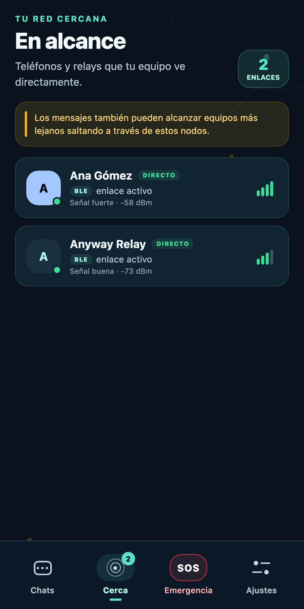
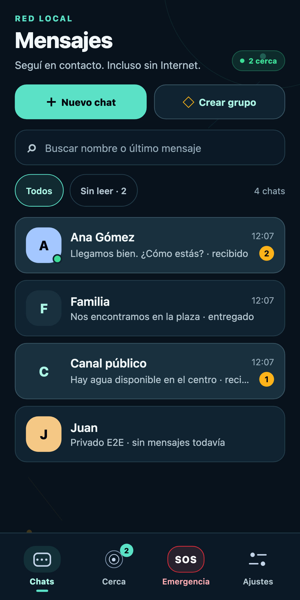
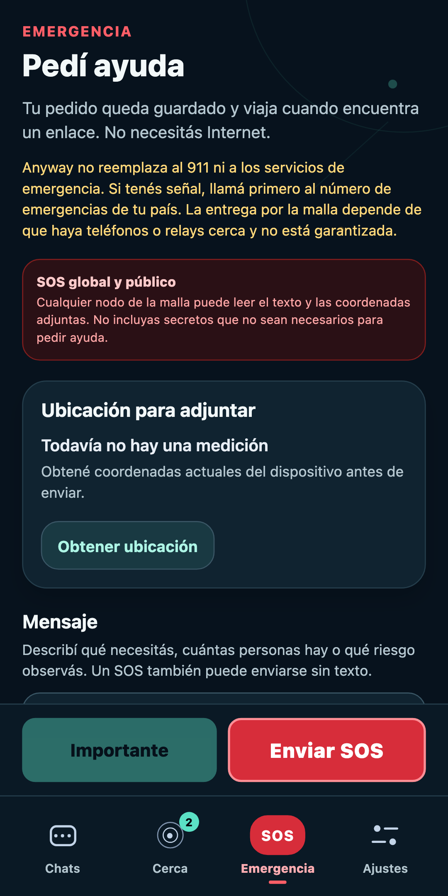
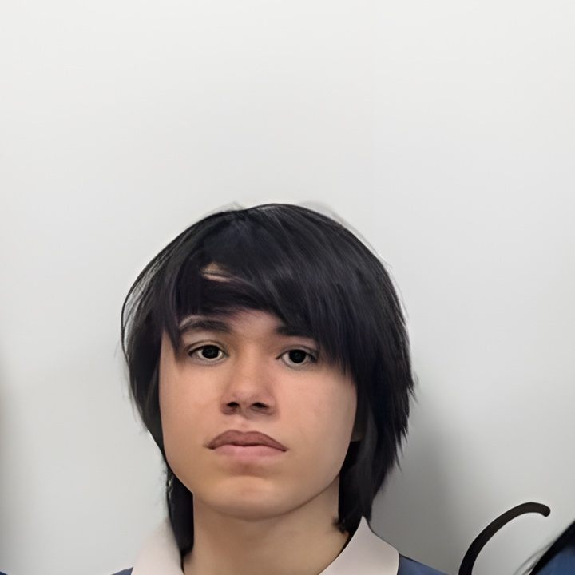
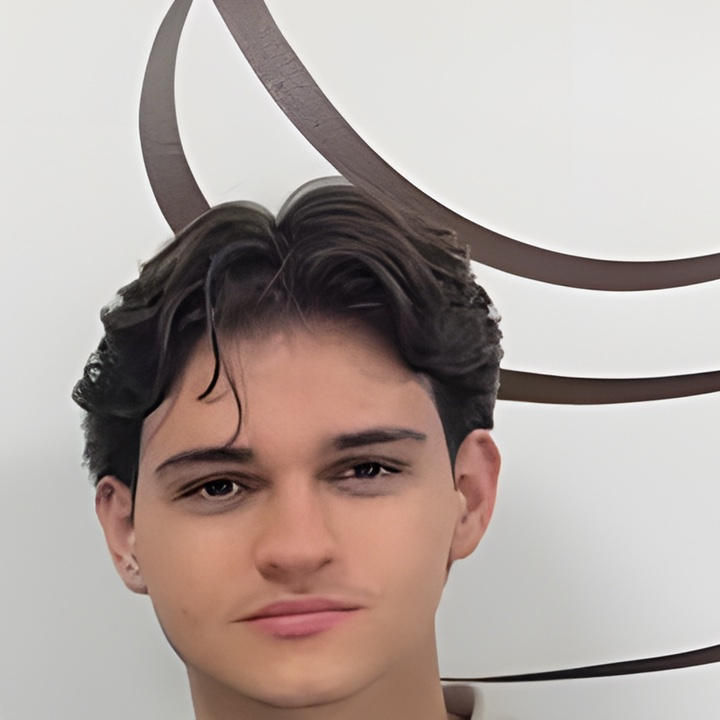

Lo enviás
Escribís el mensaje en Anyway, aunque no haya conexión a Internet.
EXPOTEC 2026 / TECNOLOGÍA PARA ESTAR CERCA
Anyway conecta teléfonos cercanos para intercambiar mensajes por Bluetooth y una red local, incluso sin Internet.
ACCESO ANTICIPADO · ANDROID · V1.18.0 / 37



Signum Vitae es una aplicación Android que permite intercambiar mensajes entre teléfonos cercanos sin depender de Internet.
Con Bluetooth Low Energy, cada dispositivo puede recibir y guardar un mensaje para ayudar a acercarlo a su destino. Así, los teléfonos próximos forman una red local que sigue funcionando cuando la infraestructura habitual no está disponible.
ASÍ FUNCIONA
Cada teléfono cercano puede ayudar a que el mensaje avance hasta su destino.
Escribís el mensaje en Anyway, aunque no haya conexión a Internet.
Los dispositivos cercanos pueden guardar el mensaje y llevarlo.
Cuando aparece otro enlace, el mensaje puede seguir avanzando.
TRANSPARENCIA
Chats privadosVan cifrados de extremo a extremo; los equipos intermedios no pueden leerlos.
SOS públicoEl texto y la ubicación que adjuntes pueden ser vistos por otros dispositivos de la red.
Anyway no reemplaza al 911 ni garantiza la entrega: depende de que haya teléfonos o relays cerca.
Somos estudiantes que imaginamos y desarrollamos tecnología para ayudar a las personas a mantenerse comunicadas durante una emergencia.


Equipo de investigación · Signum Vitae · EXPOTEC 2026